Lab Homework 1: Setup Blog
This week I set up the blog. I decided to use Github Pages for that. Since I have not done any web development, I created this page with the help of chathpt.
Lab Homework 2: Setup Unity:
I already had some experience with Unity so Unity was already set up on my PC. I use Unity version 2022.3.10.f1.
This week I decided to create a bowling seen. To do that I created the scene by using set of cubes. 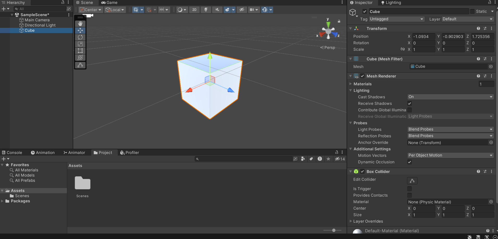 I also created some material to make the scene colorful. 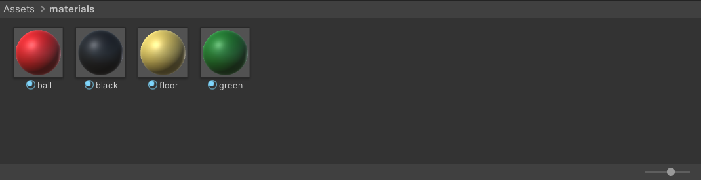 I also added pins as cylinder objects. Here is the scene 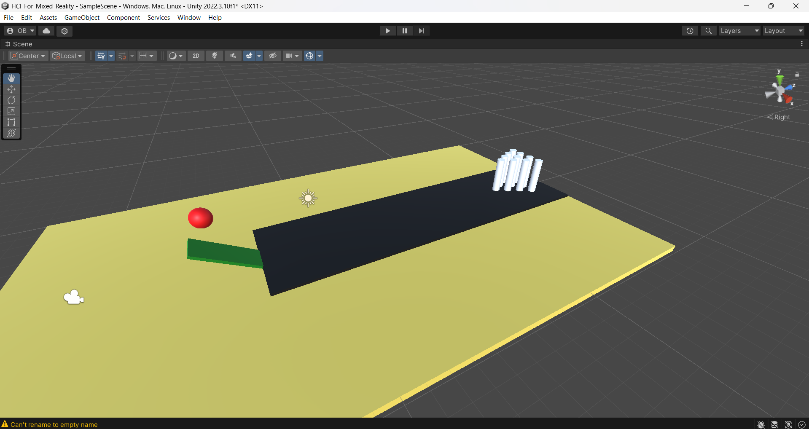 Finally I added colliders to bowling ball, floor and pins, and added rigidbody components to bowling ball to have a dynamic scene. Here is the result. 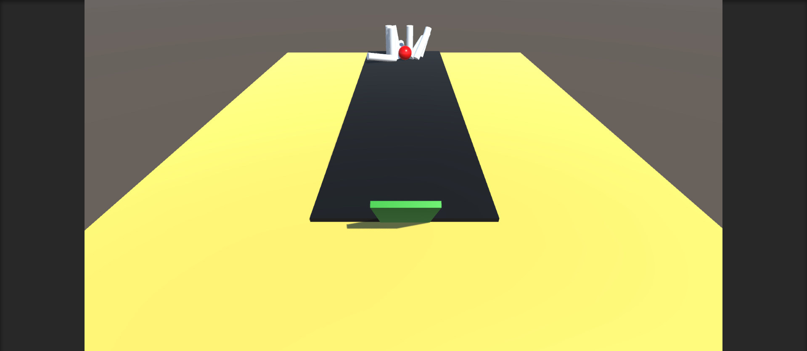
Lab Homework 3: Unity Roll-A-Ball
This week I followed Unity's roll a ball tutorial. Since I have already some experience with Unity, the implementation was pretty straightforard and I did not encounter any particular problem. Here is a scene from my implementation. 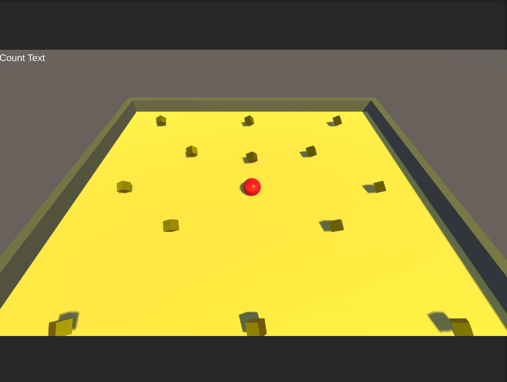 I wanted to make this project more interesting so I added some obstacle to the scene. I created a prefab called "bomb", with a sphere collider and a rigidbody. 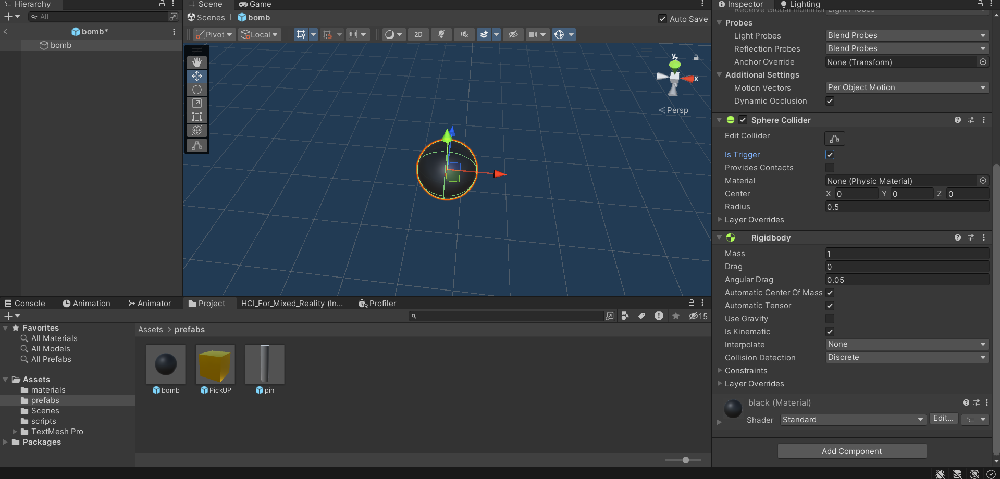 The mechanic is that if the player toches the bomb, player uses 2 points. The bomb also becomes red if the player hits it. Here is the code for that. 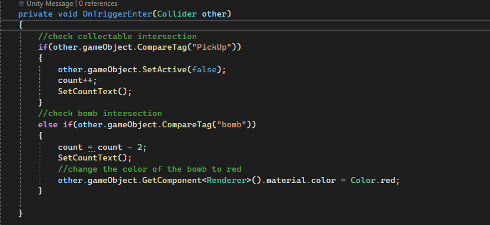 Finally I putted some obsticales on the scene. 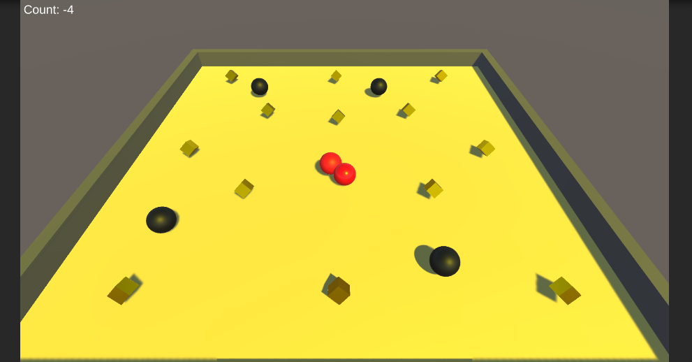
Lab Homework 4: Unity Roll-A-Ball in VR
This week I implemented the VR version of Roll-A-Ball. I haven't worked with Unity VR before so this was a new experience for me. I had a little bit difficulties to associate meta application with meta quest therefore I could not work in real time with Unity. I had to build the apk file and send it to the meta quest for each time I wanted to test the algorithm.
I started by creating the scene and setting the camera. I did not use the default Unity camera but I used OVRCameraRig.
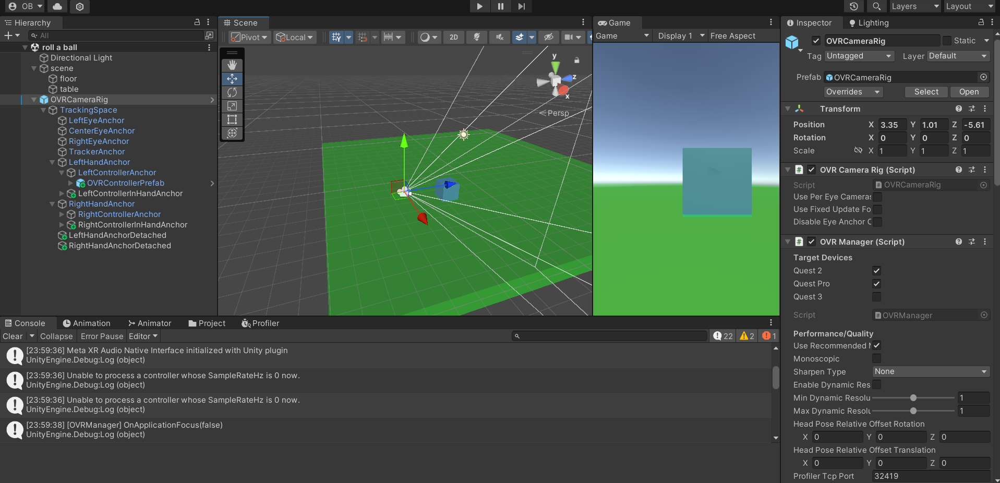
Then I exported my roll a boll project and imported it to my vr project.
 I decided to implement a direct selection method to be able to hold the roll a ball platform and move the ball by rotating my hand.
To do that I added a sphere collider to right and left hand controller. I also adjusted the layers in a way that the platform only detects
collision with hand devices.
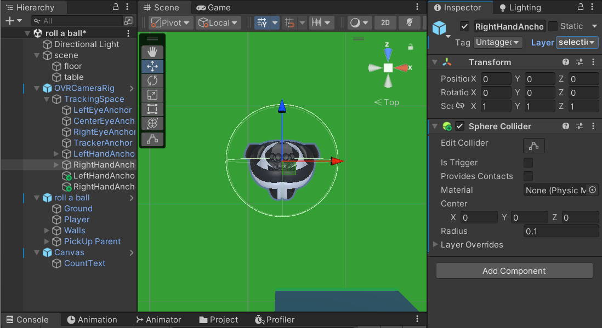
And here is the logic of my selection technique.
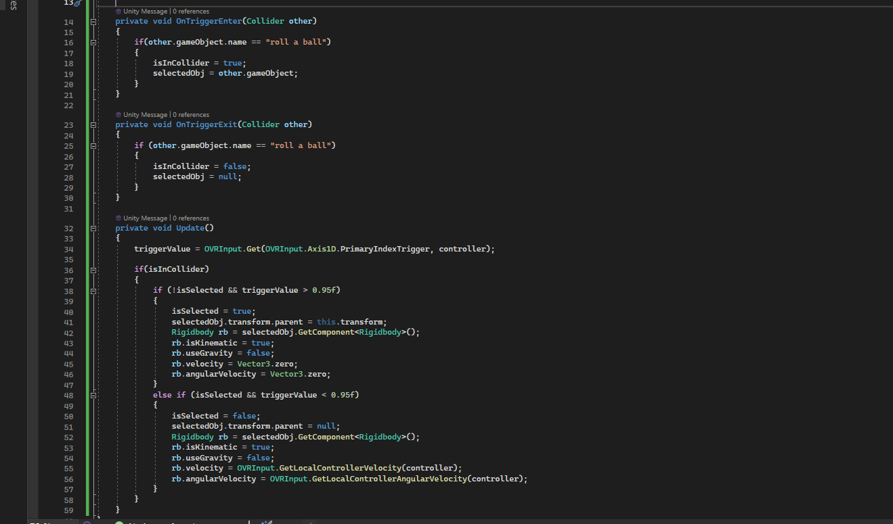
Finally I build the final project and I was able to select and rotate the platform with the hand devices. I have to say that the game
became much more interesting!
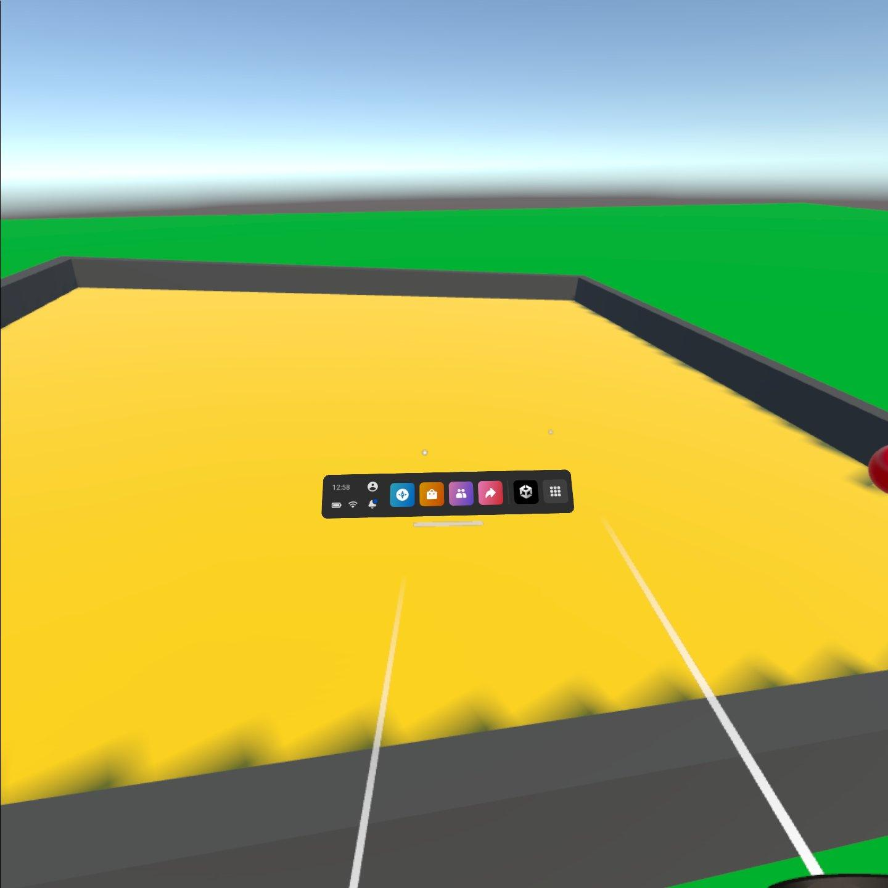
I decided to implement a direct selection method to be able to hold the roll a ball platform and move the ball by rotating my hand.
To do that I added a sphere collider to right and left hand controller. I also adjusted the layers in a way that the platform only detects
collision with hand devices.
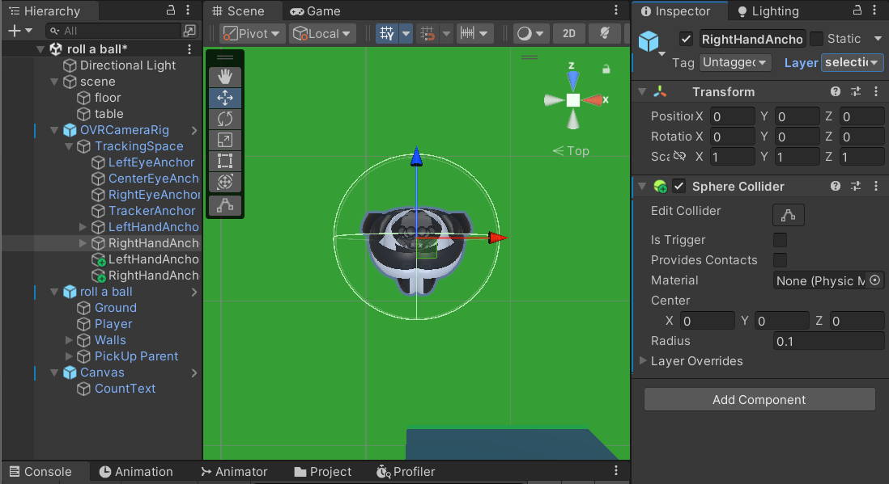
And here is the logic of my selection technique.
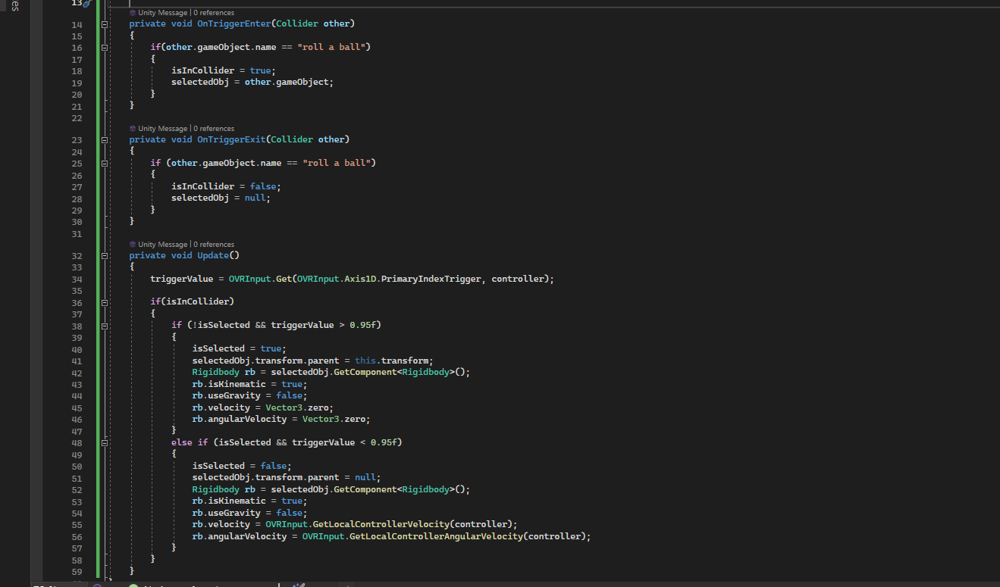
Finally I build the final project and I was able to select and rotate the platform with the hand devices. I have to say that the game
became much more interesting!
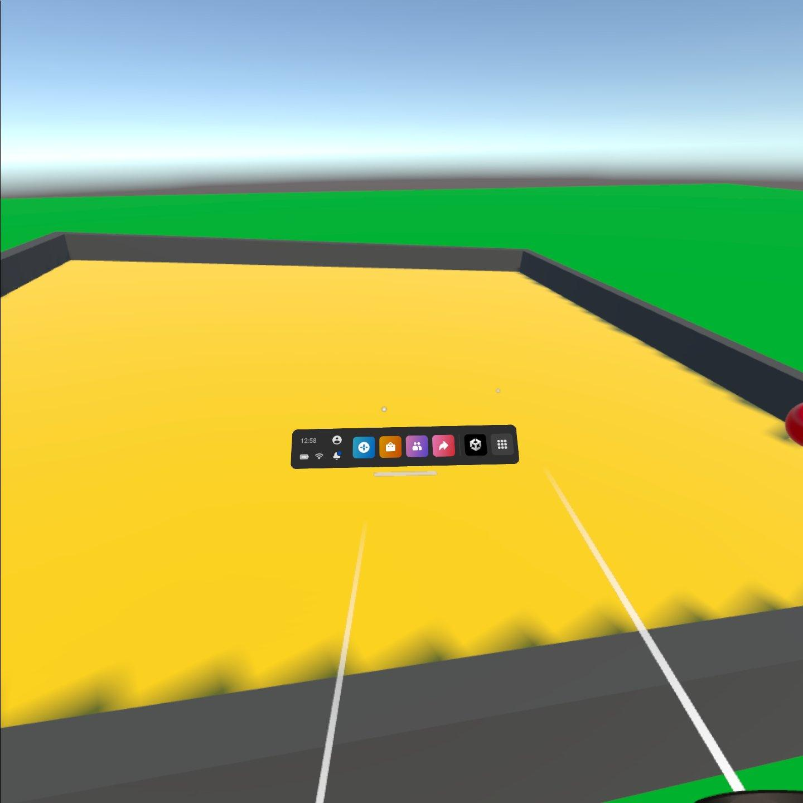
Lab Homework 5: Selection Pitch
This week I and Jean-Loup presented 2 selection techniques: selection by filtering and selection by Portls, after the presentation, we discussed with the professor and decided to implement portal selection.
Selection Techniques pdfLab Homework 6: Selection technique Implementation
This week I and Jean-Loup presented our project. The details are explained in Jean-Loup's blog. Jean-Loup blog